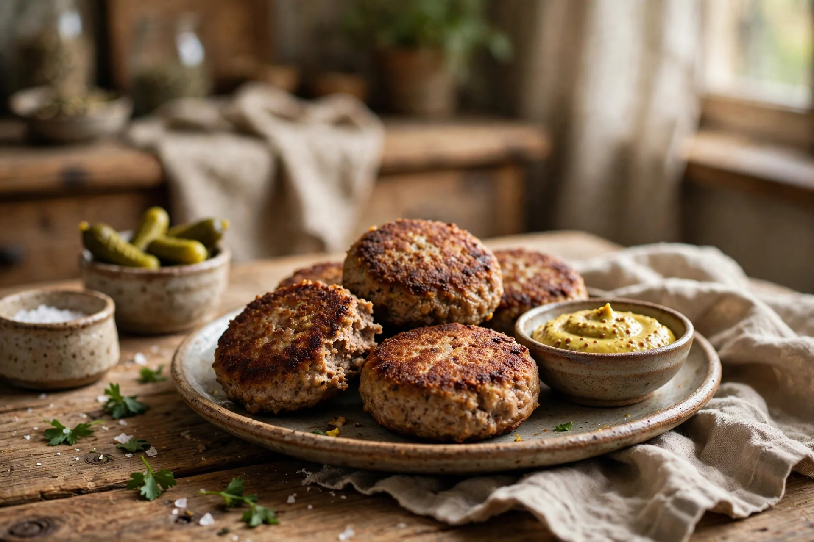
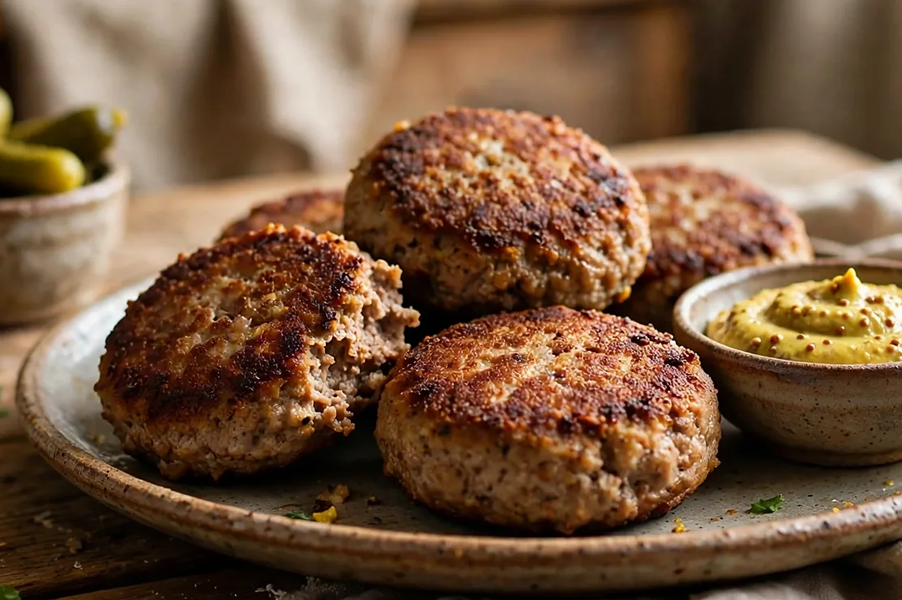

Frikadellen (German Meat Patties)
Meat patties have been on our table for as long as I can remember – warm with potato salad or cold on bread the next day. The soaked bread roll keeps them nice and light, and the mustard gives them just the right seasoning.

Contents
Ingredients
Instructions
- Soak the bread roll in lukewarm milk or water for about 10 minutes, then squeeze it out well.
- Dice the onion very finely.
- In a bowl, knead the ground meat, squeezed bread roll, onion, egg, mustard, paprika, parsley, salt and pepper thoroughly until the mixture binds well.
- With damp hands, shape the mixture into 8 even, flat patties.
- Heat the oil in a large pan and fry the patties over medium to high heat for about 5–6 minutes per side, until cooked through and nicely browned.
- Drain briefly on paper towels and serve – they go well with potato salad, fried potatoes or simply a green salad.

Tip
Do not knead the mixture for too long, or the patties turn firm instead of light. Fry one small test patty first and taste it – then you can still adjust the seasoning.
📌 Find more recipe ideas on our Pinterest profile:
Lecker Rezepte on Pinterest
Lecker Rezepte on Pinterest